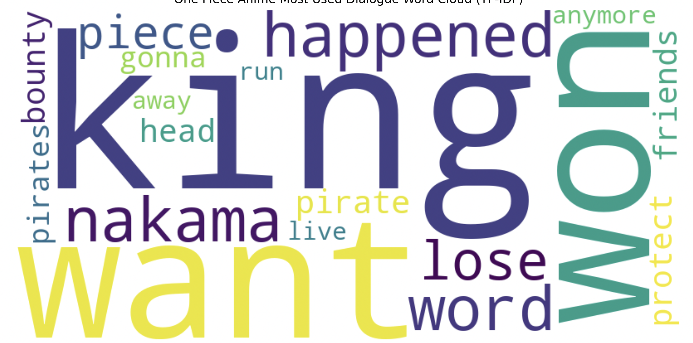
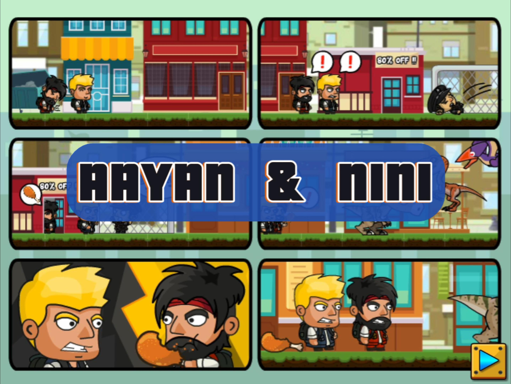

My Projects
I love to create things

Machine Learning
Test simple machine learning models

Large Language Models (LLM)
Try different open source LLMs.

Travel with me
Explore the cities

Food
Food images

Game with my nephew
Youtube

Extra
Extra